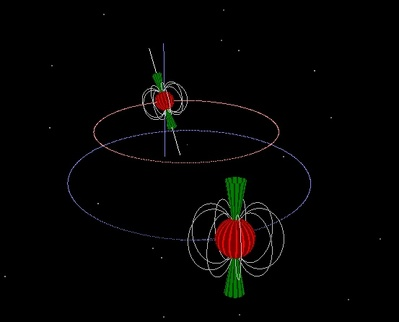

PSR J1141-6545 is a binary radio pulsar that consists of a neutron star and white dwarf in an eccentric orbit (e=0.2) that exhibits a wide range of relativistic phenomena. The binary completes five orbits per day and has a large rate of advance of periastron (5.33o/yr) explained by Einstein’s General Theory of Relativity.

Credit: Swinburne
Astronomers have also seen evidence via radio pulsar timing that the apparent spin rate of the pulsar changes due to time dilation and the orbit is shrinking at the rate predicted if the system is radiating gravitational waves. Unlike the original binary pulsar, this pulsar’s degenerate companion was formed first. Matter was transferred to the pulsar’s progenitor, making it large enough to undergo a Type II Supernova. The rapid mass loss induced the eccentricity in the orbit. The pulsar experienced a glitch which complicates the timing analysis. The pulsar was discovered in the Parkes Multibeam pulsar survey in the late 1990s. The multibeam surveys were very prolific, finding almost half of the known pulsars in our Galaxy.